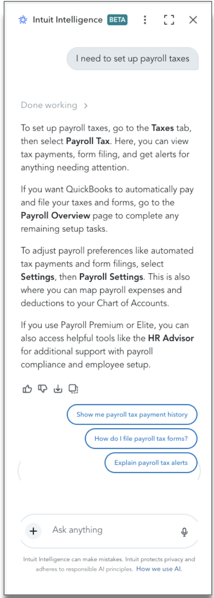
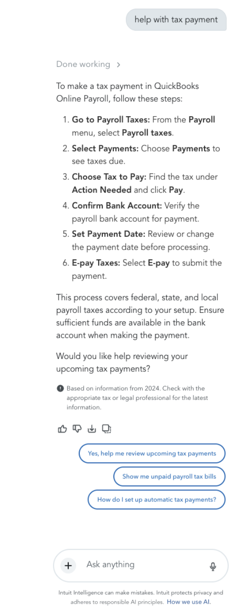
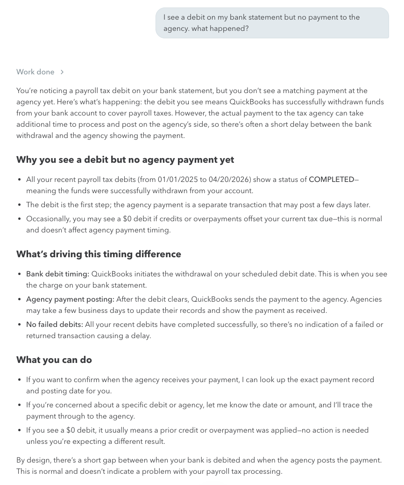
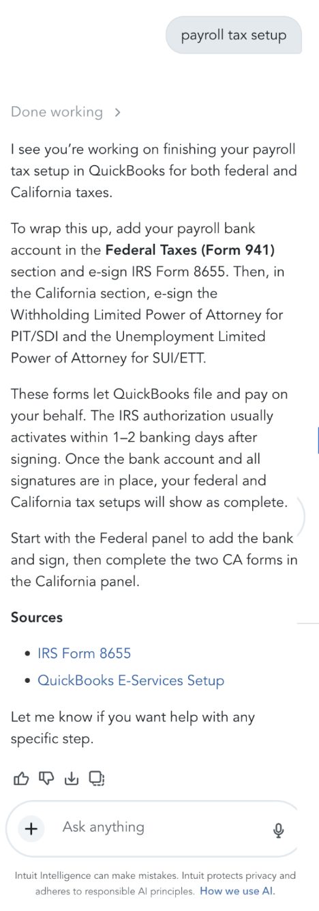

Case No. 03 Payroll taxes Digital Assistant → Intuit Intelligence
The most anxious questions got the most generic answers.
A payroll tax question is never casual. Behind it sits a government agency, a deadline, a penalty, and money that already left the bank. The legacy Digital Assistant had years of personalized payroll help built into it, and as it wound down in early 2026, that help couldn’t be copied into Intuit Intelligence as scripts. The diagnosis lived in experts’ heads. I drove the sprint that got it out: golden guidance for every priority payroll question, a generator that drafted full diagnostic reasoning for the hardest troubleshooting problems, jurisdiction by jurisdiction, and the UAT that graded how the real skills behaved against it.
- Surface
- QuickBooks Payroll tax help in Intuit Intelligence, replacing the legacy Digital Assistant’s personalized flows
- My role
- Drove the cross-functional sprint; authored the diagnostic framework and the generator; wrote and graded the UAT. Conversation AI Design Lead
- When
- Early 2026: sprint guidance delivered in early February, UAT on the live skills in April
- Results
- Guidance for all 51 sprint questions in about ten days; one diagnostic set mapping 21 customer questions to 142 root causes and 78 handoff triggers; a 13-case UAT whose misses became a fix list mapped to specific skills
01The problem
Ask about your taxes, get a tour of the menus.
Here’s the early experience. A customer setting up payroll taxes asks for help, and the answer is a map of the settings, correct for every company and specific to none. Whether this customer’s federal setup is done, which state forms are missing, what’s blocking automatic payments: the system can read all of it, and the answer touches none of it.

Real Intuit Intelligence screenshot, cropped to protect account and session details.
a map, not a diagnosisThree destinations: the Taxes tab, the Payroll Overview page, Payroll Settings. The customer still does the investigating.
nothing readWhich tax groups are ready, which forms are missing, what’s blocking automation: none of it appears, and all of it is on the account.
more of the sameThe suggested follow-ups offer payment history and form filing. More places to look, still no answer.
Payment questions fared no better. Six correct steps for paying any tax, and a disclaimer that quietly gives the game away.

Real Intuit Intelligence screenshot, cropped to protect account and session details.
the giveaway“Based on information from 2024.” A generic answer admitting it’s a generic answer, on a question about this company’s taxes now.
six steps, zero factsThe walkthrough is right for everyone. It never says what this customer owes, to which state, or by when.
the offer that can’t deliver“Would you like help reviewing your upcoming tax payments?” The right instinct, sitting under an answer that never looked.
The Digital Assistant, for all its NLU-era limits, had something these answers didn’t: years of hand-built flows that walked payroll customers through their specific situation, some of them doing the work for the customer outright. When that surface wound down, the flows couldn’t move. What could move was what an expert checks before answering.
02Why scripts couldn’t move
You can’t port a flowchart into a system that thinks.
I’d spent years building NLU-era help like this, and I knew exactly what those flows were: pre-scripted paths, one per situation we’d thought of, each hand-maintained as tax rules and product screens changed. That architecture can’t just be pasted into an agentic system, and shouldn’t be. An agent doesn’t follow a path; it decides one. What it needs isn’t the script but the judgment the script encoded: what to check, in what order, what the findings mean, and when to stop.
Anticipate the situation, script the steps, maintain every branch by hand. The Digital Assistant’s payroll flows worked this way for years. That era is its own case.
The model plans its own path. The design material becomes ground truth: what to retrieve, how to reason over it, what a right answer contains.
What the system checks before speaking, what it must ask instead of guess, and which findings mean a person takes over.
03The sprint
The diagnosis lived in people. The sprint wrote it down.
Payroll troubleshooting depends on institutional knowledge the model can’t safely infer: which of three settings silently blocks automatic payments, which state rejects which account-number format, what a stuck filing looks like versus a normal one. So I ran a sprint to extract it. My design team, Payroll product and agent partners, product and content designers, engineering, policy, support, and the domain experts themselves, all pulling the same direction. The experts brought the answers and the validation. I brought the structure that made their knowledge usable: the synthesis framework and the question-by-question format.
Every priority question got the same treatment, and we delivered guidance for all of them in about ten days, by early February.
# what every sprint question had to leave with golden_answer: # what good looks like, written with the experts expected_behavior: # what the agent checks first tool_requirements: # the account data the answer depends on diagnostic_path: # how an expert narrows the cause handoff_boundary: # the point where a person takes over
The per-question fields from the sprint framework I authored; field names condensed.
04The generator
Troubleshooting was the hard part. I wrote the generator that drafted it.
The sprint covered what customers ask. Troubleshooting territories, why a debit failed, why a state isn’t being paid, why a filing sits unaccepted, needed something deeper: full diagnostic reasoning, jurisdiction by jurisdiction. Writing those by hand doesn’t scale, and asking tax experts to author decision trees from blank pages is a bad use of scarce experts.
So I wrote a generator: a prompt that turns one customer question into a complete diagnostic worksheet in twelve required sections, from scope and sub-variants through the decision tree down to root causes and handoff triggers. The instruction I cared most about is right at the top: these are not FAQ answers. Each output has to let an agent systematically find the root cause, decide what to retrieve versus what to ask, and resolve or escalate. Experts then corrected drafts instead of authoring from scratch, which is the difference between a review meeting and a research project.
# diagnostic golden dataset generator, payroll tax purpose: detailed diagnostic decision trees, NOT simple FAQ answers. the agent must identify root causes, decide what to retrieve vs. what to ask, and resolve or escalate required_sections: # all 12, in order, none omitted 1 Header # issue, customer question, experts 2 Scope # "specificity is critical for tax compliance" 3 Sub-Variants Note # same words, different root causes 4 Critical Understanding 5 Diagnostic Decision Tree 6 Summary of Data Points to Pull 7 Data Retrievable from System 8 Data Not Retrievable (Must Ask User) 9 Reference Section(s) 10 Handoff Triggers 11 Root Cause Summary 12 Required Tools / Dependencies expert_validation: drafts marked [TBD] until an SME confirms
Condensed from the generator prompt I wrote; internal system names removed.
Here’s the generator’s reasoning on one real question, condensed from the full worksheet. One casual customer sentence, eleven distinct root causes, and a tree that checks the silent blockers in order.
“Why is QuickBooks not paying my CA taxes automatically?”
Critical understanding: automatic California payments need three things at once: the EDD account number entered, the power of attorney signed, and automated taxes switched on. Missing any one silently blocks all of it, with no obvious error anywhere.
- Confirm the payroll subscription is active.Inactive → reactivate before anything else.
- Check the automated taxes and forms setting.Off → that’s the why. Enable it, and warn that past-due taxes still need manual payment.
- Check CA state registration: is the EDD account number on file?Missing → the customer has to supply it; the system can see the field is empty but can’t know the number.
- Verify the power of attorney for California.Unsigned or pending → nothing can be paid on the customer’s behalf.
- Check e-services enrollment.Not enrolled → enrollment gap, another silent blocker.
- Verify employees are assigned to a CA work location.None → there’s nothing to pay; fix work locations or confirm CA is winding down.
Condensed from one generated diagnostic; the full worksheet carries all twelve sections.
One troubleshooting set built this way covered 21 diagnostics, 142 catalogued root causes, and 78 handoff triggers, each trigger naming the condition that ends self-serve and what to gather before the handoff. That’s the scale argument for the generator: judgment stays with experts, volume goes to the machine.
05Retrieve vs. ask
The line that decides whether the agent feels smart or lazy.
The structural decision that shapes the agent most: every diagnostic separates the data the system can retrieve from the information it must ask the customer. That split is the character of the agent. Ask a customer for something the system can plainly see, and trust drops; the agent feels like the settings page with extra steps. Guess at something only the customer knows, and the answer is dangerous. So the boundary is explicit, per question, and every must-ask carries a documented reason the system can’t know it.
retrieve, never ask
- Payroll subscription status and tier
- Automated-taxes setting, on or off, and its change history
- CA EDD account number: populated or empty
- Power-of-attorney status: signed, pending, not signed
- E-services enrollment status
- Employee work locations and tax exemptions
- Bank connection status and CA payment history
ask, never guess
“Do you have your CA EDD account number?”
Asked only if the field is empty. The system can see it’s missing; it can’t know the number. Only the EDD registration has it.
“Did someone recently change your payroll settings?”
A previous admin or an accountant may have made changes that don’t show in any audit trail the system can reach.
“Will you keep having employees work in California?”
Asked only if no CA employees are found. Intent decides everything downstream: set CA up properly, or close the account, which has filing implications of its own.
From the same diagnostic; the split is a required section of every worksheet.
06Grading the real thing
Then the skills were real, and I graded them against the ground truth.
By April the payroll tax skills were up and answering in Intuit Intelligence, and I ran UAT against them: thirteen cases across four phases, discovery, cross-skill handoffs, bug validation, and guardrails. I graded eleven runs: three passed clean, five came back partial, three failed. Each miss got a diagnosis and the response I’d have wanted instead. Polish wasn’t the bar. The bar was whether the agent used the right data, brought in the adjacent skill when the question crossed domains, and answered like it knew what day it was.
| customer asks | skills expected | grade | what happened | the ideal I wrote | |
|---|---|---|---|---|---|
| 1 | “Was my Q1 filing accepted, and did the payment go through?” | filings + payments | partial | The cross-skill handoff worked: filings and payments in one combined table, the federal payment traced to its settlement date. But the Form 941 had sat “Submitted” for weeks and the agent called that common and reassuring, instead of flagging the elapsed time. And it answered federal-only for a customer with state obligations. | Time-aware and two-sided: submitted but not accepted for over two weeks, when acceptance usually takes 5 to 7 business days, may be a processing delay or a rejection worth checking. Then the state filings, offered unprompted. |
| 2 | “I see a debit on my bank statement but no payment to the agency. What happened?” | debits + payments | partial | Loaded the debits skill and pulled real data, but one-sided: it explained the debit and never cross-referenced the payment side the customer was actually worried about. And it pulled fifteen months of history for a question about one recent debit. | A narrow window, last 30 days, then each debit matched to its payment record, shown as pairs: here’s what left your bank, here’s where it went. |
| 3 | “What are my state payroll tax liabilities?” | payments | fail | A multi-state company asked an ambiguous question, and the agent silently answered for California only. It knew the other states existed from its own earlier tool calls; its follow-up chips even offered a by-state comparison. The stale 2024 disclaimer appeared again too, stamped on live account data. | Treat “state” as ambiguous: pull every state and summarize, or ask which one the customer means, naming the states it already knows the company operates in. |
| 4 | “What were my 2023 payroll tax payments?” | any · guardrail test | fail | The skills carry a pre-2025 boundary, and the agent bypassed it: queried 2023 anyway, found nothing, and explained why. A failed guardrail and, awkwardly, a genuinely helpful answer. I flagged the bypass and raised the real question for the team: should this guardrail soften to allow no-data-found responses? | Enforce the boundary without losing the help: records here start in late 2024 when automated taxes came on, there’s no 2023 data to show, and here’s how to see 2025 onward. |
Condensed from my UAT tracker. Reviewer fields, internal bug links, and trace identifiers removed.
The misses shared a pattern: the skills retrieved well and reasoned thinly. Time-blindness, one-sided cross-skill answers, disclaimers contradicting live data, date ranges wider than the question. Every one became a documented issue with the response I’d have wanted attached, so the fix had a target. Here’s a graded run in full.

Real UAT run, April 2026, on a test account. Cropped; trace identifiers removed.
reads well, checks littleConfident structure, real account data, and a clean explanation of the debit side.
fifteen months for one debit“from 01/01/2025 to 04/20/2026” is the window it pulled to answer a question about a single recent charge.
one-sidedThe customer asked where the payment went. The answer explains the debit and offers to check the payment side later, which was the question.
07Where it landed
Ground truth the team could build against, and did.
Guidance for every sprint question by early February, plus the diagnostic layer for the troubleshooting territories: worksheets an agent can follow and an eval can check.
Nine troubleshooting territories carried expert validation. The generator drafted; the tax experts confirmed and corrected.
UAT closed with a recommendations sheet, each item mapped to the skill prompt that needed it: a mandatory pre-answer checklist for the automation question, disambiguation rules for multi-state companies, a translation table for internal status codes, and a time-aware check for stuck filings.
The agent team built and ran the skills; I contributed the ground truth they built against, the UAT that graded the results, and the fix list that came out of it.
And the target behavior is real. Here’s the setup question from the top of this page, answered the way the ground truth says it should be: from this company’s account, naming exactly which federal and California steps remain.

Real Intuit Intelligence screenshot, cropped to protect account and session details.
it read the account“…finishing your payroll tax setup in QuickBooks for both federal and California taxes.” The diagnosis the before-answer skipped.
the exact stepsThe bank account, IRS Form 8655, the two California power-of-attorney forms. A to-do list, not a tour.
boundedIt says what happens after signing and when setup will show complete. No guessing past the account data.
Payroll changed what I think the design job is. The design surface isn’t the dialog anymore. It’s what the system checks before it speaks and what a right answer has to contain. Producing that at expert quality and machine volume is the job now.
NextThe Quality Program
The grading discipline in this case didn’t start here. The Quality Program is where the eval systems, review loops, and golden-dataset standards behind it were built.